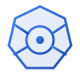

Container & Pod
Le fondamenta: cosa gira davvero dentro un Pod e perche'.

KPCMIl corso open source
Container, Pod, Deployment, Service… senza dottorato in astrofisica. Impari Kubernetes partendo da zero, con esempi che giri davvero sul tuo cluster.
Dal primo container al cluster in produzione, un mattoncino alla volta.
Le fondamenta: cosa gira davvero dentro un Pod e perche'.
Scalare, aggiornare e fare rollback senza downtime.
Esporre le app e instradare il traffico dall'esterno.
Configurazioni e credenziali fuori dall'immagine.
Dati che sopravvivono al riavvio dei Pod.
Health check, request/limit e Pod che si auto-curano.
initContainer e hook postStart/preStop per il ciclo di vita.
RBAC, namespace, networking e tutto cio' che serve davvero.
Vuoi che la tua app giri in cluster senza dipendere sempre dai sysadmin.
Conosci Linux e i container, ora vuoi orchestrarli sul serio.
Hai sentito parlare di Kubernetes ovunque e vuoi finalmente capirlo.
Gli esempi del corso sono pubblici e pronti da applicare al tuo cluster.